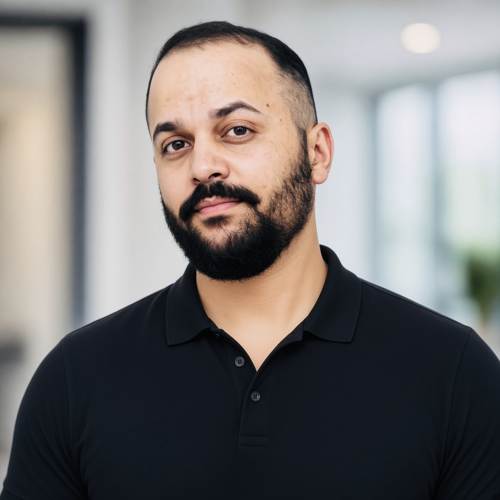

SKPhoto placeholderLanguage · Accessibility · Agency
Saurabh Kalia.
MS in Computer Science · Artificial Intelligence
Georgia Institute of Technology
Expected December 2026
Human-centered AI & NLP for assistive communication
About
I am pursuing an MS in Computer Science at Georgia Tech, specializing in Artificial Intelligence. My research interests focus on how language technologies and interactive systems can support communication, accessibility, and user agency.
My professional background spans software development and solution architecture in telecommunications and financial services, including roles at Charter Communications, Credit Suisse, and Amdocs.
Research interests
Topics: Human-centered AI, natural language processing, silent speech interfaces, accessible workplace communication, voice identity, and user agency.
I am interested in how AI-assisted communication can preserve a person’s intended meaning, support participation in professional settings, and give users control over personalized synthetic voices. These questions describe the research directions I hope to pursue.
Education
- Georgia Institute of TechnologyMS, Computer Science · AI specialization · Expected December 2026
- Western Governors UniversityMS, Information Technology Management · January 2026
- Himachal Pradesh UniversityBTech, Information Technology · June 2014
Selected work
Research preparation.
Developing research questions through proposals, literature review, and collaboration.
Research proposal
Assistive Communication and Silent Speech Interfaces
CS 8803 · Introduction to Research · Spring 2026
A proposal pairing acoustic-sensing eyewear with LLM-enhanced vocal re-synthesis for assistive workplace communication. Research questions address technical information exchange, perceptions of professional authority and communicative competence, and voice identity.
Research collaboration
AI and Hiring
CS 8903 · Special Problems · Spring 2026
I performed literature review and contributed to group discussions, IRB document preparation, and research-participant mock interviews for a doctoral student’s project. Mentor and further study details await confirmation and public-disclosure clearance.
Details forthcoming
Course literature review
AI-Mediated Second-Language Learning
CS 6795 · Fall 2025
An interdisciplinary literature synthesis on how AI-mediated translation and summarization may reshape second-language representations. I examined cognitive load, lexical encoding, receptive–productive competence asymmetries, and neuroplasticity, and developed recommendations balancing AI assistance with cognitively demanding learning activities. The full report is forthcoming.
Report forthcoming
Selected academic projects.
Computational work, applied analysis, and systems planning.
Completed computational project
Forest Cover Type Classification
Summer 2026
Benchmarked Decision Trees, kNN, SVMs, and neural networks on a stratified 20,000-record Covertype sample. The project also examined optimization, regularization, clustering, and dimensionality reduction. Adam test Macro-F1 increased from 0.6193 to 0.6710 with label smoothing, as reported in my CV.
Explore project ↗Completed · report pending In progress
National Parks Seasonal Demand Analysis
Fall 2026
A CSE 6242 project using 2022–2025 Recreation.gov campsite-demand data. I am responsible for data integration and modeling; a comparison of SARIMA forecasts against a seasonal naive baseline is planned. Completed components and results will be added as the work progresses.
In progress
WGU capstone
Data Model Modernization for Automated Reporting Analytics
C498 Master’s Capstone · Fall 2025 · Planning and mock implementation
Developed an OBIEE-based self-service reporting plan covering semantic and dimensional models, ETL, governance, costs, risks, and a phased six-month implementation. Defined evaluation for reporting time, adoption, satisfaction, data quality, and performance. Benefits remain targets, rather than measured improvements.
Planning & mock implementation
Professional experience.
A background in software development and solution architecture.
Charter Communications
Solutions Architect · Apr 2023–Present
Led technical discovery and mobile billing solution design, and validated implementations with vendors and cross-functional stakeholders.
Credit Suisse
Software Development and Architecture Engineer · Oct 2019–Jan 2023
Designed and led development of a regulatory reporting application using PL/SQL, Informatica, OBIEE, and Java to automate data integration and manual handoffs.
Amdocs
Software Developer · Dec 2014–Sep 2019
Developed provisioning logic in Java, PL/SQL, and shell scripts, and integrated J2EE applications with upstream ordering.
Sears Holdings India
Software Development Intern
Internship details to be added.
See the CV for the full employment history.
Curriculum vitae
My CV includes education, research preparation, academic projects, professional experience, and technical skills.
Download CV (PDF)
The current PDF contains contact placeholders. A finalized copy will replace the document at this same address.